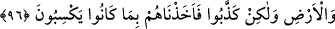

verilmiştir. Şu halde “seyyie”, kötü fiil mânâsındadır. Allah Teâlâ ise kötülük yapmaz.
Afv, bir şeyin artıp çoğalması demektir. Nitekim şu hadiste de bu mânâdadır:
“Bıyıkları kısaltın, sakalı da uzatın (va‘fû).”[65]
Şâir şöyle demiştir:
“Yoksul ve azlıktan sonra çoğaldılar (afev).
Bir zamanlar yanlarında bir deve bile yoktu.”
“ve” başlarına gelen darlık ve sevincin Allah’dan bir imtihan olduğunun farkına
varmadan: Bize olduğu gibi “atalarımıza da darlık ve sevinç dokunmuştu.” dediler.”
Bu gibi şeyler zamanın adetindendir. Bazen kötü olur, bazen de iyi olur. Başlarına
gelenlere rağmen atalarımız dinlerinde sebât edip ondan vazgeçmediler. Siz de kendi
dininizde sebât edin. Sakın ondan ayrılmayın.” dediler.
Bunun üzerine “biz de onları” azabın inmesinin “hiç farkında olmadıkları”, hiçbir
kötülüğü hatırlarından geçirmedikleri “bir sırada ansızın” en şiddetli ve en korkunç
şekilde “yakaladık.” Azabın böyle gelmesinin şiddeti çok, üzüntüsü daha büyüktür.
Çünkü kişi, belanın alametlerini öncülerini görünce kendisini ona hazırlar. Fakat aniden
gelen azabda böyle bir şey olmaz.
96. O (peygamberlerin gönderildiği) ülkelerin halkı inansalar ve (günahtan)
sakınsalardı, elbette onların üstüne gökten ve yerden nice bereket kapıları
açardık, fakat yalanladılar, biz de ettikleri yüzünden onları yakalayıverdik.
Bu surenin baş tarafında geçen “Nice kentler helâk ettik” (el-A‘râf, 7/4) ayetiyle
işaret edilen o helâk edilen “ülkelerin halkları” küfür ve isyanlarının yerine “inanıp”
küfürden ve kötülüklerden “korunsalardı, elbette üzerlerine gökten ve yerden
bolluklar açardık;” Yani onlara bol bol iyilikler saçar ve her yönden onlara hayır
kapılarını açardık. Onlar, bir kısmı gökten, bir kısmı da yerden gelen çeşitli mûsibetlere
maruz kalmazlardı.
Müfessirlerin çoğu, ‘göğün bollukları’ndan maksadın yağmur, ‘yerin bollukları’ndan
maksadın ise sebzeler ve mevyeler olduğunu söylemişlerdir.
“Fakat” böyle yapmayıp kendilerine gönderilen peygamberleri “yalanladılar, biz de
onları kazandıkları” işledikleri çeşit çeşit küfür ve masiyetleri “yüzünden yakaladık.”
Bu yakalama, önceki ayette geçen ansızın yakalamadır.
Bu ayette, şükreden kul için kendisine yetecek, hatta artacak kadar rızka sahip olmanın
saadet vesilesi olduğuna delâlet etmektedir. Ya da kul Allah’a şükredenlerden değilse
malın çokluğu, kendisi için vebal olur. Nitekim bir ayette şöyle buyurulmuştur:
“...Rahmân’ı inkar edenlerin evlerinin tavanlarını ve çıkacakları merdivenleri